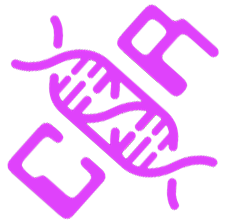

__CHURCH OF ROBOTRON__
Praise the mutant!


 The Church of Robotron was thought up late one night by Elijah (MES) and I (BTR)
outside my house. I live across the street from a church and I've got
a Robotron machine in my house. We started saying stuff like needing
to do our prayers in front of the machine and that eventually turned
into the Church of Robotron.
The Church of Robotron was thought up late one night by Elijah (MES) and I (BTR)
outside my house. I live across the street from a church and I've got
a Robotron machine in my house. We started saying stuff like needing
to do our prayers in front of the machine and that eventually turned
into the Church of Robotron.

__CHURCH OF ROBOTRON__
Praise the mutant!
The First Altar was designed to be put in my front yard so that anyone
that walked by could play Robotron and hear some propaganda. I built
a prototype that was played by a few folks during a 24 hour BBQ that
was held in 2011. The First Altar held up, but hasn't been installed
out front yet, it needs more weatherproofing.
The Church of Robotron Second Altar & Installation had the following features:


- During gameplay Jacob's Ladder and Sparker were running
- Fog machine randomly triggered
- Lasers fired in real life when enforcer shots were fired in game
- Rotating flapper near player hands spun when humans were killed by Robotrons
- Animated gif of your face at time of death in game which was displayed on a leaderboard in the other room.
- Bright LED flash on death, this allowed us to get a decent picture from the webcam on death and added to the players disorientation on death
- Kneeler base which detected players and controlled lights.
- Readerboard which displayed top player and witty statements
- Randomly shuffling sermon videos
- Lit totem pole
- Reading room which contained stickers, chick tract, and a zine.
The Second Altar was designed to be small so we could transport it to
Toorcamp. Initially, we had small ambitions because we wanted it to
be easy to transport and setup. One of the first problems to solve
was where to house the installation. Karl (KRA) (who stepped up to be
project manager) contacted the Toorcamp folks
about an art grant to cover some expenses and they offered us a
"small" dome. We jumped on this and of course the project grew
fast.
The next problem was to get game events triggering real world
effects. Jason tackled this initially by using the cheat interface to
monitor memory locations and see if we could get the events we needed
that way. That turned out not to get all the info we needed. I
jumped in and used the MAME debugger to trace around and find the
breakpoints and watchpoints we needed. This was made much much easier
by Sean Riddle (http://seanriddle.com), he's got most of the RAM space
mapped out, so it wasn't to hard to trace back and find the
breakpoints we needed. We then added some code to MAME to allow us
to send messages via UDP and we could now react to game events with
external code. (This is all available here: https://github.com/breedx2/mcor)


The first piece of code that took advantage of the UDP events was the
dispatcher. Its job was to monitor the UDP packets and then send out
serial commands to each of our effect microcontrollers. We used a
scheme where we broadcast commands to every serial device with an
address. That way we didn't need to rely on udev rules to keep
controllers straight and we could also handle connect / disconnect of
devices gracefully.
The first effect we got working was the lasers. Philip (PODOM) got the laser
driver board up and running quickly and we were able to get a proof of
concept on the protocol. Karl followed suit with the Jacob's ladder,
sparker, and flapper effect boards.


Elijah, Karl, and Jason built the altar up quickly. We wanted a
military surplus look and we got it. It was sturdy and did not catch
on fire!


Jared was given a readerboard by Pavel. He tried to contact the
manufacturer for information to set text on the board and got
nowhere. So he decided to hack around their logic and drive the shift
registers directly from an Arduino. He then wrote a quick Python
program that used libusb to communicate to the reader. During
Toorcamp there was a broken row at the very bottom of the
sign that Jared worked around by taping black electrical tape over
it. Brilliant!
Getting the webcam to work the way we wanted to was harder than
originally thought. Libby had put together some loose scripts that
used GStreamer to capture images and ImageMagick to convert them to an
animated GIF. There were two issues. First, there was no way to get
the version of GStreamer installed on the game box to limit the number
of images taken. We worked around that by manually deleting old
images from the dispatcher. Second, ImageMagick took a LONG TIME to
generate the final animated GIF. Because of this, we ended up writing
a capture routine that used OpenCV to interface to the webcam and
images2gif.py to generate the GIF. This worked out pretty well and
prevent the images from hitting the disk until we were saving them.


We packed everything into multiple vehicles and headed up to Neah
Bay. When we arrived there was a nice dome covered in green parachute
material. It looked great! We covered the top with a tarp just in
case it got wet and then got to work inside. We partitioned the dome
into three rooms: Altar room, reading room, and storage. We used a
lot of rope to do this. Mounting the monitor was done with steel
wire. Having a floating monitor looked great! What didn't look great
is what was eventually called the "Forbidden Zone" behind the altar.
Our last minute solder jobs and general wire mess frequently died when
things would get unplugged. But we got it all setup after a lot of
work and it looked great.


We had 800 games and 1200 minutes of playtime at Toorcamp! People
loved it! We saw CoR stickers everywhere. I saw people reading the
literature. One player exclaimed that he "embraced the doctrine of
futility!" as he left the Church.
There are two forks I'd like to follow for the future of CoR. One is
to get the First Altar installed. Second, it'd be awesome if we could
install the Church in more locations. A great start would be a
gallery in the Portland area so that we can show more of our friends
the results of our work. There's also been some talk about bringing
it to the Choas Communication Camp. We'd love to do it, but we'd have
to figure out logistics and would need some support, if you can help,
contact us at mutantsavior@churchofrobotron.com